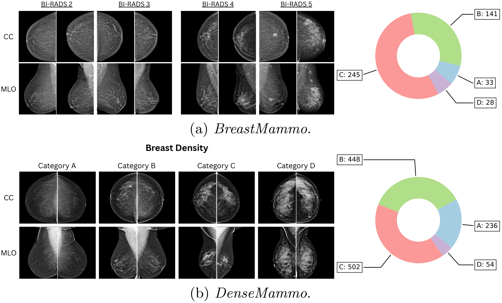
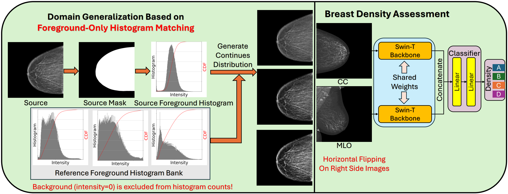
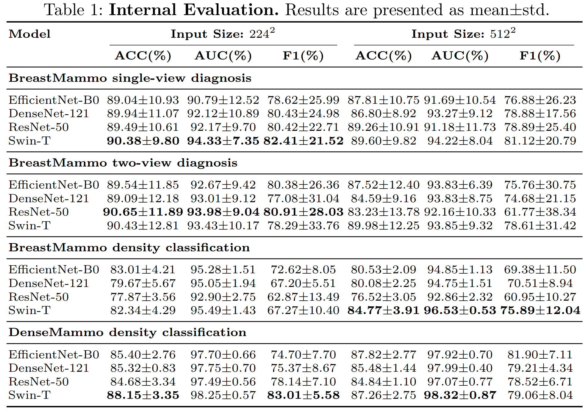
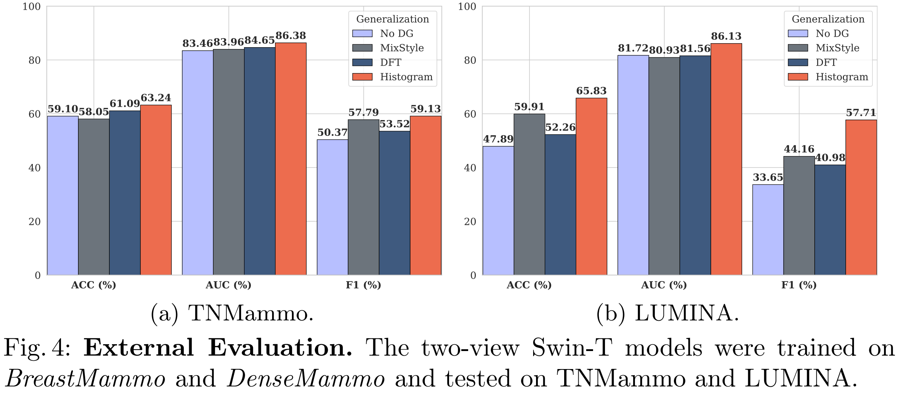

BreastMammo & DenseMammo introduce multi-view mammography benchmarks for breast density assessment and pathology diagnosis across disparate clinical domains. We propose a foreground-only histogram matching protocol that decouples breast tissue style from anatomy, achieving a peak AUC of 98.32% on screening data and significantly outperforming MixStyle and Fourier-based domain generalization frameworks on unseen clinical sites (TNMammo & LUMINA).
Breast density classification is a critical component of breast cancer risk assessment, yet AI models often struggle to generalize across clinical sites due to vendor-specific acquisition styles. In this work, we introduce two new datasets, BreastMammo and DenseMammo, to facilitate robust multi-view mammography research. We propose a domain generalization framework that utilizes a foreground-only histogram matching protocol to resolve the domain shift issue arising from disparate clinical sources. Internal evaluation using a 5-fold cross-validation protocol demonstrates the efficacy of our approach, with the Swin Transformer backbone achieving a peak AUC of 98.32% for density classification. External evaluation on the TNMammo and LUMINA datasets demonstrates that the proposed approach consistently reduces domain shift, significantly outperforming prominent domain generalization paradigms, including MixStyle and Discrete-Fourier-Transform-based frameworks.




@inproceedings{pan2026breastmammo,
title={BreastMammo and DenseMammo: Benchmarks for Mammography Domain Generalization},
author={Pan, Hongyi and Durak, Gorkem and Aktas, Halil Ertugrul and Bejar, Andrea Mia and Seker, Mustafa Ege and Alibeyoglu, Nebile and Guclu, Rumeysa and Bozkurt, Rana Gunoz Comert and Gurdal, Sibel Ozkan and Cabioglu, Neslihan and Ozcinar, Beyza and Yilmaz, Ravza and Ozmen, Vahit and Aribal, Erkin and Erturk, Sukru Mehmet and Zafari, Yalda and Mabrok, Mohamed and Batmanghelich, Kayhan and Yaqub, Mohammad and Xu, Ziyue and Bagci, Ulas},
booktitle={Medical Image Computing and Computer Assisted Intervention -- MICCAI 2026 Workshop Deep-Brea3th},
year={2026}
}